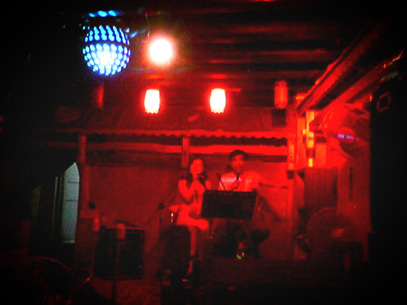
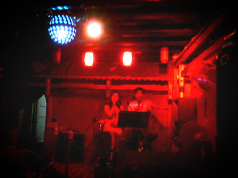
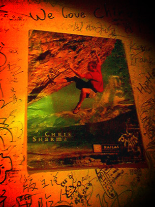
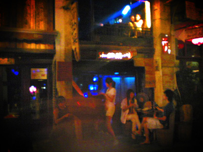
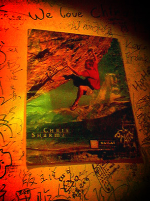
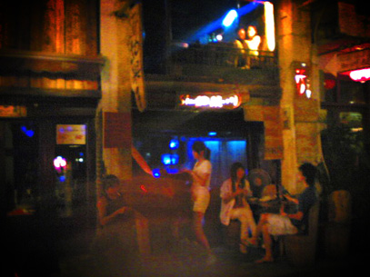
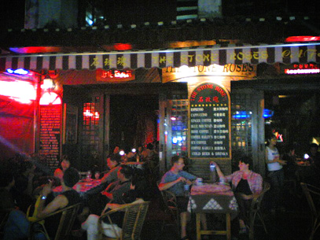
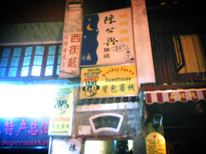
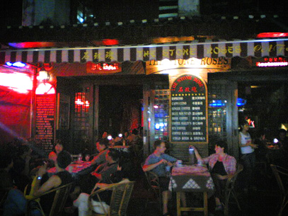
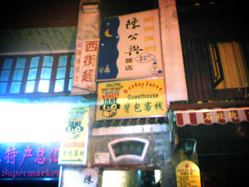

西街印象，陶醉于山水人文之间
8/30/2005 6:30:47 PM
从桂林到阳朔经历了一个小时的Bus，我们前排的是一对老外，一直卿卿我我。
越是靠近阳朔，越是发觉路边的店上写的英文多起来。
路上我们一直在看《广西行知书》，书中提到作者就住在蝶翠路，而且作者的家里设有客房，于是我们打算就住在作者家里。
下车后穿过一条短短的小路就到达西街，我们穿过重重的导游包围去找作者的家，但是通过电话联系，得知已经没有经营了。
于是我们走进西街，打算选一个酒吧安顿好。
来到西街之前我看了很多照片，看了很多文字，但是也没有一个人可以把西街写得像我所见的那样，也许那份感觉是只能意会不能言传的。
我，陶醉于山水人文之间。
以至现在，我依然觉得我仿佛在做梦。
那个只有梦中才可以存在的地方。
其中有很多很多的细节让我喜欢那个地方，让我陶醉，难忘。
下面先分享几张西街的照片。

 
 

 
